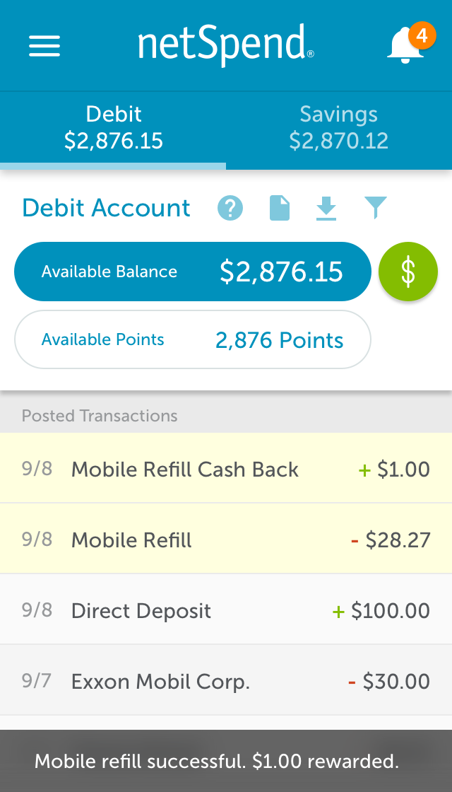
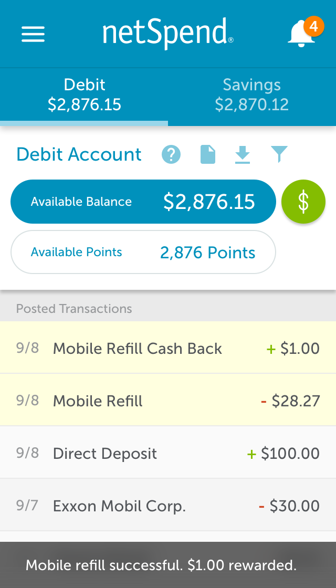
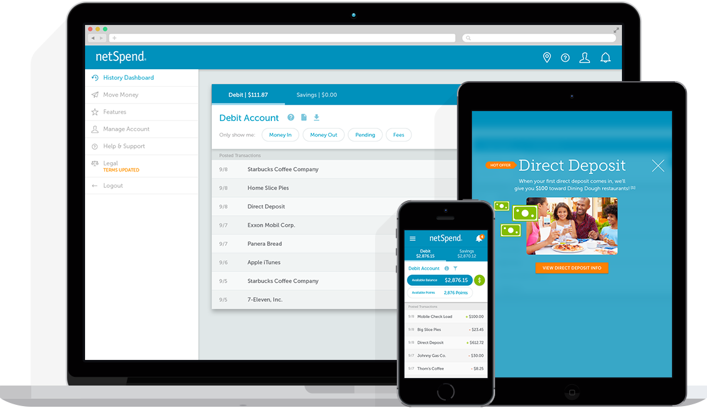
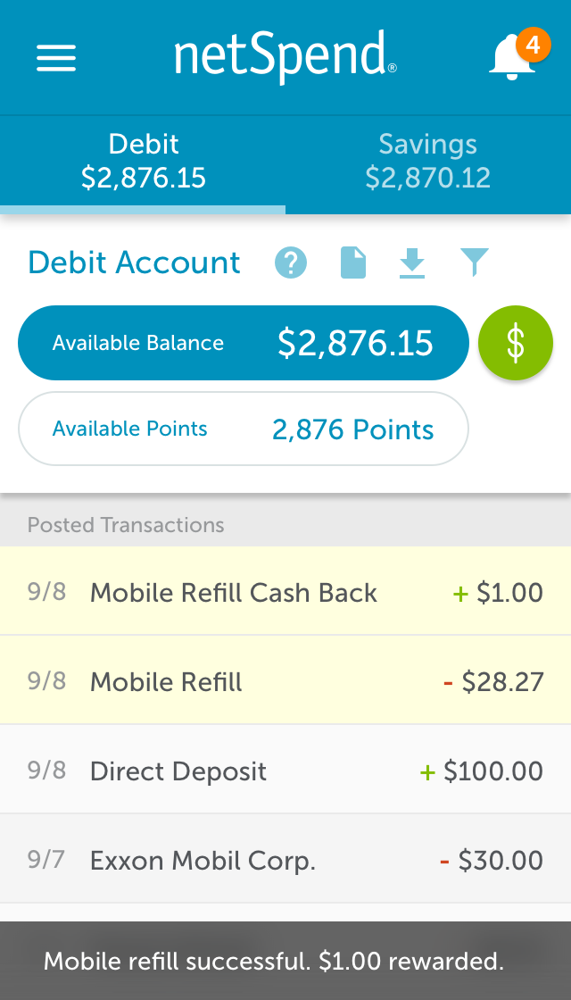

I have 10+ years of experience in design, and specialize in user interface and interaction design. My creativity, self-motivation, and passion for creating the best possible experience for users is what matters to me the most.
2012 – Present
High-Fidelity Mockups / Prototype
We realized early on that people tend to download our mobile app even without having an account. Because of that, I decided to add optional marketing that gets triggered the first time the app is opened. This allows for potential customers to quickly see some of the key benefits of opening account, while also allowing existing customers to go directly to the login page with one tap.
High-Fidelity Mockups / Prototype
NetSpend's online account center was recently redesigned, so we wanted to trigger a short message to let users know about the change. The product team also wanted to add a quick tour around the updated user interface just in case they are not familiar with some of the new icons.
High-Fidelity Mockups / Prototype
To get users to engage with some of NetSpend's key features, I created a quick prototype of the onboarding experience. A series of five cards are shown upon logging in and are marked green if complete. Using the circle with broken out sections instead of a more traditional progress bar helps indicate that the steps do not have to be completed in any specific order.
High-Fidelity Mockups / User Interface Flow

NetSpend’s Mobile Refill feature allows users to add money to their existing prepaid phone plan. By doing this within our app, users get a $1.00 credit in return after each refill.
Strategic Planning


NetSpend is partners with companies such as PayPal, Western Union, and Brinks to deliver a prepaid credit card solution for their customers. I'm responsible for making sure each of the partners' online account center is branded correctly based on their style guide.
High-Fidelity Mockups / HTML & CSS
I've created multiple marketing websites, acquisition pages, and microsites while at NetSpend. Our partner's business goals and objectives sometimes vary, so a lot of time is spent upfront in the reseach and discovery phase. I'm also responsible for creating wireframes, mockups and, at times, the coding and implementation.